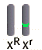

Color Blindness Problem Set
Brief Introduction to Sex-Linked Inheritance
Fusion of egg and sperm|
Each normal human egg carries a single X chromosome while each normal human sperm carries either an X or a Y chromosome.
Eggs fertilized by sperm with an X chromosome develop into females. Eggs fertilized by sperm with a Y chromosome become males. For more information about working with a Punnett square see the Tutorial of Problem 1 in the Monohybrid Cross section of Mendelian Genetics. |
|
The most common type of red-green color perception
defect is due to a mutation on the X-chromosome (i.e. a red-green color
blind allele). X-linked red-color blindness is a recessive trait. Females
heterozygous for this trait have normal vision. The color perception
defect manifests itself in females only when it is inherited from both
parents. By contrast, males inherit their single X-chromosome from their
mothers and become red green color blind if this X-chromosome has the
color perception defect. Different genotypes for this trait are
illustrated below.
The dominant X chromosome is represented as XR. |
|
| Since males have only one X-chromosome, if this chromosome has the red-green color blind allele, the males will have the color perception defect. | |
| Females have 2 X-chromosomes. Both X-chromosomes must carry the mutant allele for the females to be color blind. Red-green color blind females are homozygous for the recessive allele. |
|
| Females with one mutant allele and one normal allele are heterozygous "carriers". They are not color blind, but they can pass the color blindness to their children. |  |
| The following pedigree will be used throughout the problem set to record the genetic makeup of each individual of Audrei's family. |


The Biology Project
University of Arizona
Saturday, October 10, 1998
Contact the Development Team
http://www.biology.arizona.edu
All contents copyright © 1998. All rights reserved.